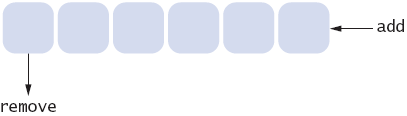

previous |
start
Answers
- 
- Stacks use a "last in, first out" discipline. If you are the
first one to submit a
print job and lots of people add print jobs before the printer has a
chance to
deal with your job, they get their printouts first, and you have to
wait until all
other jobs are completed.
previous |
start